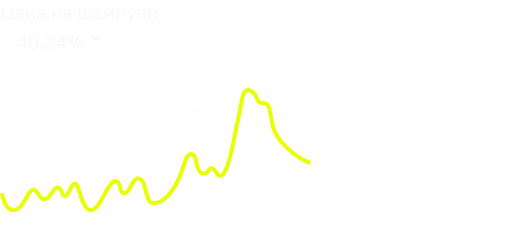
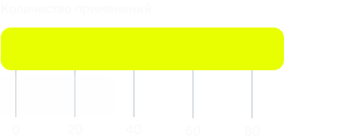

Битва шампуней:
твердый vs жидкий

Александр Зенкин
Время чтения: 2 мин
Коротко
По сути жидкие средства — это вода в пластиковой упаковке, которая быстро заканчивается. Твёрдый формат экономит деньги, сокращает мусор и упрощает хранение
Твердый шампунь лучше жидкого, потому что служит дольше, занимает меньше места, создает меньше отходов и стоит дешевле в долгосрочной перспективе
Факты


Твердые средства
не подходят, если...
Жёсткая вода, которая требует дополнительного ополаскивания. Если кожа головы чувствительная, лучше выбрать менее концентрированный жидкий формат. Кроме того, чтобы привыкнуть к новой форме продукта, нужно время Для некоторых использовать жидкий шампунь с обильной пеной привычнее
Цифры

Сокращение использования пластика на 2–5 кг пластика в год

Стоимость на 20–40% ниже жидких средств

Твердые средства на 70-90 применений, а не 30–40